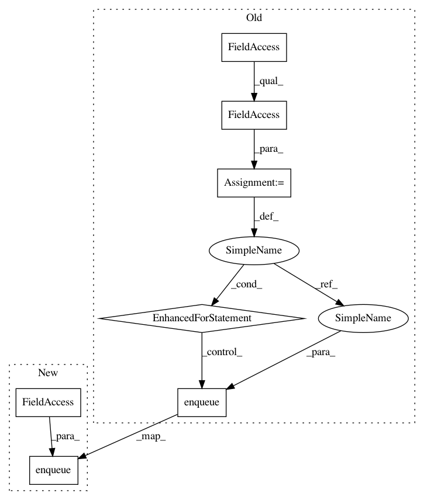

4707d1998b87229d68d9d9c5b1e91abdf4232df6,lib/streamlit/proxy/LocalWebSocket.py,LocalWebSocket,on_message,#LocalWebSocket#Any#,42
Before Change
//self._launch_web_client(self._connection.name)
elif msg_type == "delta_list":
assert self._connection, "No `delta_list` before `new_report`."
for delta in msg.delta_list.deltas:
self._connection.enqueue(delta)
else:
raise RuntimeError("Cannot parse message type: %s" % msg_type)
@Proxy.stop_proxy_on_exception()
After Change
//self._launch_web_client(self._connection.name)
elif msg_type == "delta":
assert self._connection, "No `delta` before `new_report`."
self._connection.enqueue(msg.delta)
else:
raise RuntimeError("Cannot parse message type: %s" % msg_type)
@Proxy.stop_proxy_on_exception()
In pattern: SUPERPATTERN
Frequency: 3
Non-data size: 7
Instances
Project Name: streamlit/streamlit
Commit Name: 4707d1998b87229d68d9d9c5b1e91abdf4232df6
Time: 2018-07-05
Author: adrien.g.treuille@gmail.com
File Name: lib/streamlit/proxy/LocalWebSocket.py
Class Name: LocalWebSocket
Method Name: on_message
Project Name: streamlit/streamlit
Commit Name: 382657390f5d9c52a1dba827479605cf16ccd9c9
Time: 2018-07-04
Author: adrien.g.treuille@gmail.com
File Name: lib/streamlit/proxy/LocalWebSocket.py
Class Name: LocalWebSocket
Method Name: on_message
Project Name: streamlit/streamlit
Commit Name: 254e1cf934d0844155612bf7e3502c44c0119aed
Time: 2018-07-06
Author: adrien.g.treuille@gmail.com
File Name: lib/streamlit/proxy/LocalWebSocket.py
Class Name: LocalWebSocket
Method Name: on_message